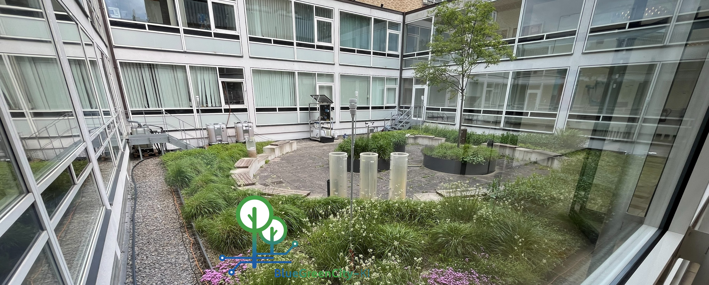
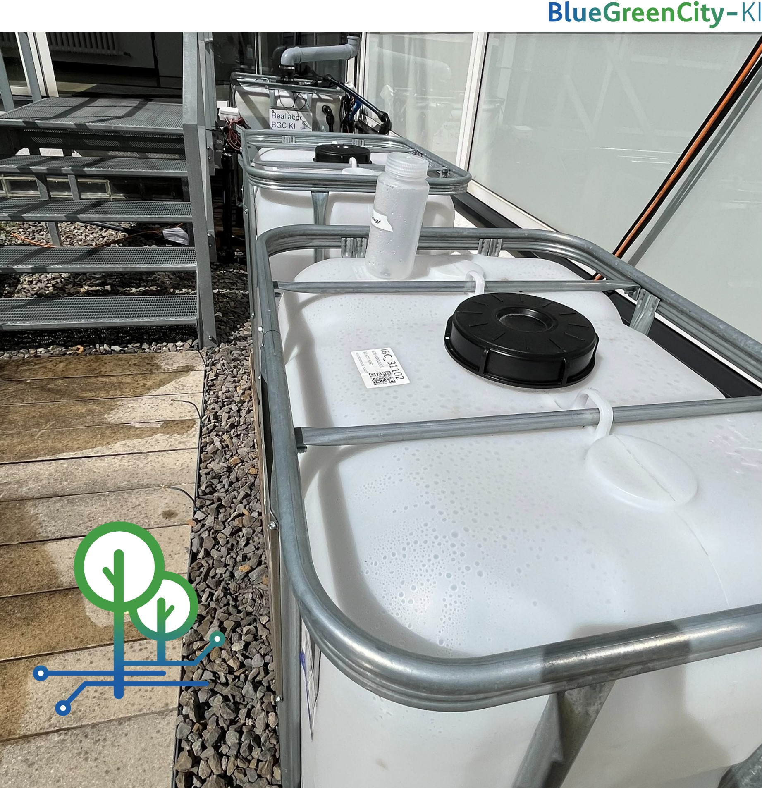
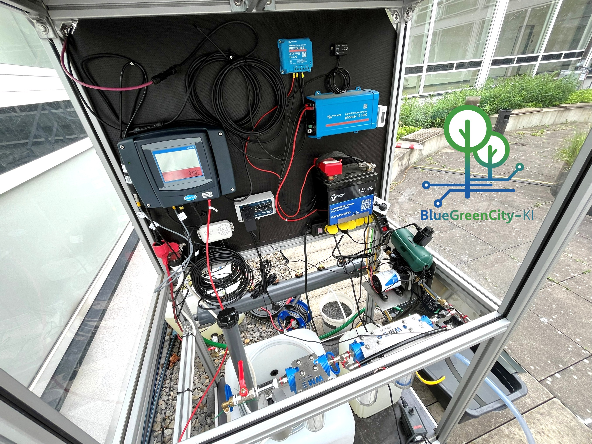
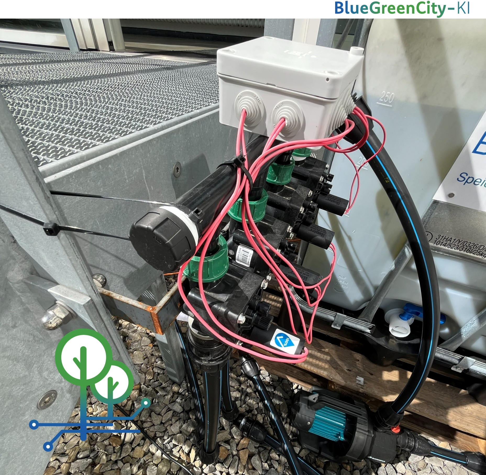
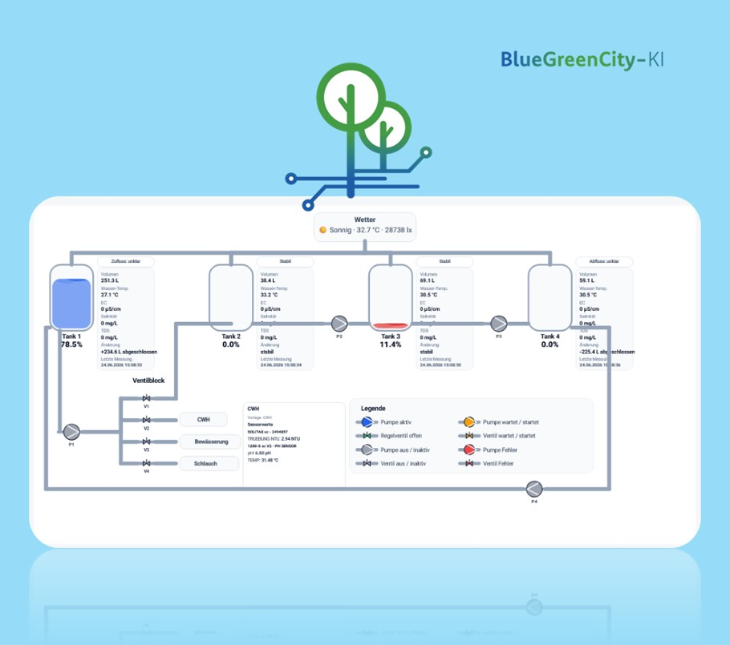
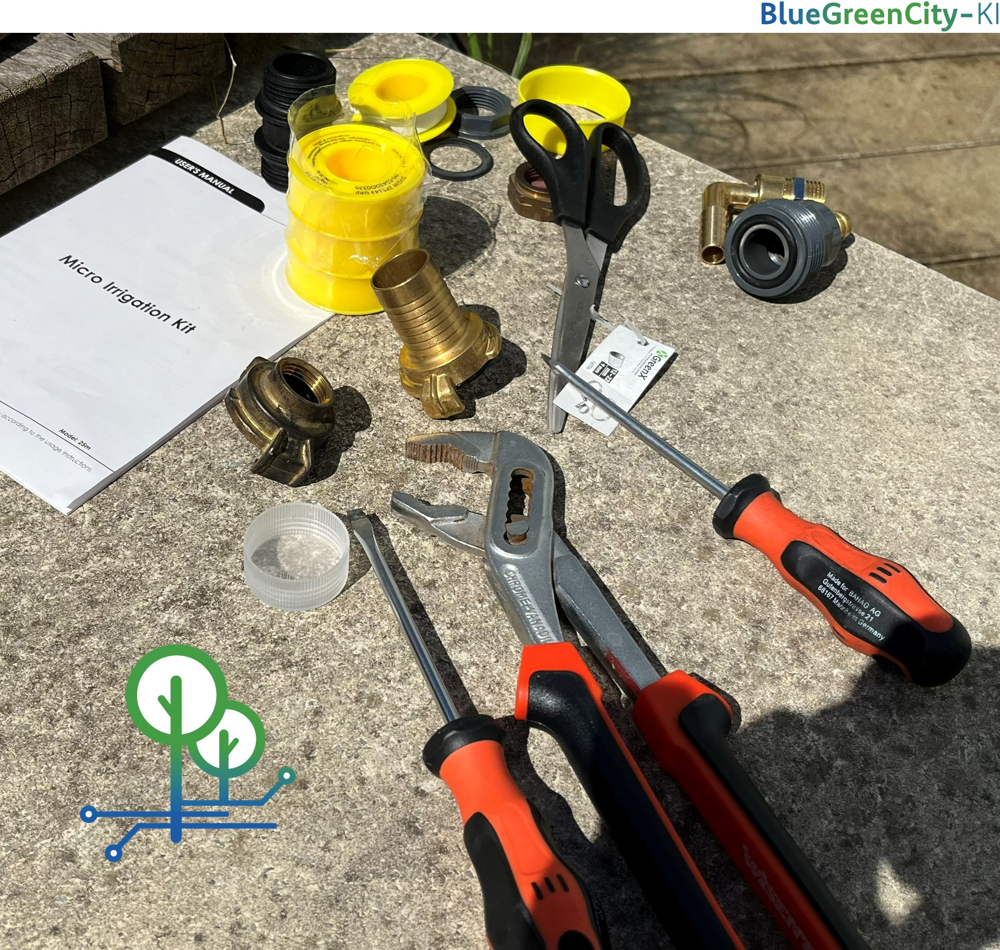

System overview – Blue Green Yard courtyard

Four interconnected cisterns

Water treatment unit

Sensor network for real-time monitoring

AI-based control dashboard

Installation and construction phase

Water flow visualization

Completed Blue Green Yard system